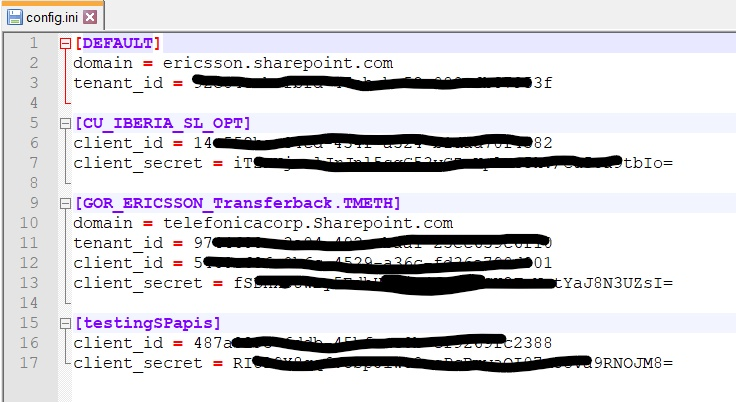

<!DOCTYPE html>
<html class="writer-html5" lang="en" >
<head>
  <meta charset="utf-8">
  
  <meta name="viewport" content="width=device-width, initial-scale=1.0">
  
  <title>sharepoint module &mdash; sharepoint 0.0.1 documentation</title>
  

  
  <link rel="stylesheet" href="_static/css/theme.css" type="text/css" />
  <link rel="stylesheet" href="_static/pygments.css" type="text/css" />

  
  
  
  

  
  <!--[if lt IE 9]>
    <script src="_static/js/html5shiv.min.js"></script>
  <![endif]-->
  
    
      <script type="text/javascript" id="documentation_options" data-url_root="./" src="_static/documentation_options.js"></script>
        <script src="_static/jquery.js"></script>
        <script src="_static/underscore.js"></script>
        <script src="_static/doctools.js"></script>
        <script src="_static/language_data.js"></script>
    
    <script type="text/javascript" src="_static/js/theme.js"></script>

    
    <link rel="index" title="Index" href="genindex.html" />
    <link rel="search" title="Search" href="search.html" /> 
</head>

<body class="wy-body-for-nav">

   
  <div class="wy-grid-for-nav">
    
    <nav data-toggle="wy-nav-shift" class="wy-nav-side">
      <div class="wy-side-scroll">
        <div class="wy-side-nav-search" >
          

          
            <a href="index.html" class="icon icon-home" alt="Documentation Home"> sharepoint
          

          
          </a>

          
            
            
          

          
<div role="search">
  <form id="rtd-search-form" class="wy-form" action="search.html" method="get">
    <input type="text" name="q" placeholder="Search docs" />
    <input type="hidden" name="check_keywords" value="yes" />
    <input type="hidden" name="area" value="default" />
  </form>
</div>

          
        </div>

        
        <div class="wy-menu wy-menu-vertical" data-spy="affix" role="navigation" aria-label="main navigation">
          
            
            
              
            
            
              <!-- Local TOC -->
              <div class="local-toc"><ul>
<li><a class="reference internal" href="#">sharepoint module</a></li>
</ul>
</div>
            
          
        </div>
        
      </div>
    </nav>

    <section data-toggle="wy-nav-shift" class="wy-nav-content-wrap">

      
      <nav class="wy-nav-top" aria-label="top navigation">
        
          <i data-toggle="wy-nav-top" class="fa fa-bars"></i>
          <a href="index.html">sharepoint</a>
        
      </nav>


      <div class="wy-nav-content">
        
        <div class="rst-content">
        
          


<div role="navigation" aria-label="breadcrumbs navigation">

  <ul class="wy-breadcrumbs">
    
      <li><a href="index.html" class="icon icon-home"></a> &raquo;</li>
        
      <li>sharepoint module</li>
    
    
      <li class="wy-breadcrumbs-aside">
        
            
            <a href="_sources/sharepoint.rst.txt" rel="nofollow"> View page source</a>
          
        
      </li>
    
  </ul>

  
  <hr/>
</div>
          <div role="main" class="document" itemscope="itemscope" itemtype="http://schema.org/Article">
           <div itemprop="articleBody">
            
  <div class="section" id="module-sharepoint">
<span id="sharepoint-module"></span><h1>sharepoint module<a class="headerlink" href="#module-sharepoint" title="Permalink to this headline">¶</a></h1>
<p>Module to implement SharePoint functionality in bots</p>
<dl class="field-list simple">
<dt class="field-odd">Author</dt>
<dd class="field-odd"><p>Sharath Kumar V K</p>
</dd>
<dt class="field-even">Contact</dt>
<dd class="field-even"><p><a class="reference external" href="mailto:sharath&#46;kumar&#46;k&#46;v&#37;&#52;&#48;ericsson&#46;com">sharath<span>&#46;</span>kumar<span>&#46;</span>k<span>&#46;</span>v<span>&#64;</span>ericsson<span>&#46;</span>com</a></p>
</dd>
<dt class="field-odd">Date</dt>
<dd class="field-odd"><p>10th Oct, 2020</p>
</dd>
</dl>
<p>This module aims to provide clear logical interfaces for
implementing SharePoint functionalities in the bots.
Presently some of the developers might be editing the boiler
plate code provided in the <a class="reference external" href="https://teams.microsoft.com/l/entity/com.microsoft.teamspace.tab.wiki/tab::85b8d8f9-1bfa-452a-a118-a3c297d8fbde?context=%7B%22subEntityId%22%3A%22%7B%5C%22pageId%5C%22%3A7%2C%5C%22origin%5C%22%3A2%7D%22%2C%22channelId%22%3A%2219%3A33002c78ffa343ff841aa9e9d7f654e2%40thread.tacv2%22%7D&amp;tenantId=92e84ceb-fbfd-47ab-be52-080c6b87953f">Automation Wiki Channel</a>.
This module aims to mitigate that and provide a pythonic approach.</p>
<p>Also, if an individual bot needs to access multiple SharePoint sites,
multiple instances can be created for sites using the <code class="docutils literal notranslate"><span class="pre">SharePointBuilderObject</span></code>,
which was not possible previously or it was cumbersome to edit the boiler-plate
for multiple sites.</p>
<p class="rubric">Examples</p>
<div class="doctest highlight-default notranslate"><div class="highlight"><pre><span></span><span class="gp">&gt;&gt;&gt; </span><span class="kn">import</span> <span class="nn">sharepoint_og</span>
<span class="gp">&gt;&gt;&gt; </span><span class="n">sp</span> <span class="o">=</span> <span class="n">sharepoint_og</span><span class="o">.</span><span class="n">SharePointObjectBuilder</span><span class="p">()</span>
</pre></div>
</div>
<p>If the configurations for a SharePoint site is already present in <code class="docutils literal notranslate"><span class="pre">config.ini</span></code> file.</p>
<div class="doctest highlight-default notranslate"><div class="highlight"><pre><span></span><span class="gp">&gt;&gt;&gt; </span><span class="n">site_1</span> <span class="o">=</span> <span class="n">sp</span><span class="p">(</span><span class="s1">&#39;site_1_name&#39;</span><span class="p">)</span>
<span class="gp">&gt;&gt;&gt; </span><span class="n">site_1</span><span class="o">.</span><span class="n">connection_status</span><span class="p">()</span>
<span class="go">200</span>
<span class="gp">&gt;&gt;&gt; </span><span class="n">site1</span><span class="o">.</span><span class="n">create_folder</span><span class="p">(</span><span class="s1">&#39;Shared Documents/folder1&#39;</span><span class="p">,</span> <span class="s1">&#39;new_folder&#39;</span><span class="p">)</span>
<span class="go">Folder creation attempt response: 200</span>
<span class="go">Folder: new_folder created at Shared Documents/folder1</span>
</pre></div>
</div>
<p>If you want to register new configurations of internal SharePoint site</p>
<div class="doctest highlight-default notranslate"><div class="highlight"><pre><span></span><span class="gp">&gt;&gt;&gt; </span><span class="n">site2</span> <span class="o">=</span> <span class="n">sp</span><span class="o">.</span><span class="n">register_site</span><span class="p">(</span><span class="n">site</span><span class="o">=</span><span class="s1">&#39;new_site&#39;</span><span class="p">,</span> <span class="n">client_id</span><span class="o">=</span><span class="s1">&#39;1234..&#39;</span><span class="p">,</span> <span class="n">client_secret</span><span class="o">=</span><span class="s1">&#39;fylth..&#39;</span><span class="p">)</span>
<span class="gp">&gt;&gt;&gt; </span><span class="n">site2</span><span class="o">.</span><span class="n">connection_status</span><span class="p">()</span>
<span class="go">200</span>
</pre></div>
</div>
<p>If you want to register new configurations of external SharePoint site</p>
<div class="doctest highlight-default notranslate"><div class="highlight"><pre><span></span><span class="gp">&gt;&gt;&gt; </span><span class="n">site3</span> <span class="o">=</span> <span class="n">sp</span><span class="o">.</span><span class="n">register_site</span><span class="p">(</span><span class="n">site</span><span class="o">=</span><span class="s1">&#39;ext_site&#39;</span><span class="p">,</span> <span class="n">client_id</span><span class="o">=</span><span class="s1">&#39;456..&#39;</span><span class="p">,</span> <span class="n">client_secret</span><span class="o">=</span><span class="s1">&#39;xyz..&#39;</span><span class="p">,</span><span class="n">domain</span><span class="o">=</span><span class="s1">&#39;telefonicacorp.sharepoint.com&#39;</span><span class="p">,</span> <span class="n">tenant_id</span><span class="o">=</span><span class="s1">&#39;9730...&#39;</span><span class="p">)</span>
<span class="gp">&gt;&gt;&gt; </span><span class="n">site3</span><span class="o">.</span><span class="n">connection_status</span><span class="p">()</span>
<span class="go">200</span>
</pre></div>
</div>
<dl class="py class">
<dt id="sharepoint.SharePoint">
<em class="property">class </em><code class="sig-prename descclassname">sharepoint.</code><code class="sig-name descname">SharePoint</code><span class="sig-paren">(</span><em class="sig-param"><span class="n">site</span><span class="p">:</span> <span class="n">str</span></em>, <em class="sig-param"><span class="n">response</span><span class="p">:</span> <span class="n">NamedTuple</span></em><span class="sig-paren">)</span><a class="headerlink" href="#sharepoint.SharePoint" title="Permalink to this definition">¶</a></dt>
<dd><p>Bases: <code class="xref py py-class docutils literal notranslate"><span class="pre">object</span></code></p>
<p>A class used to represent SharePoint object.</p>
<p>…</p>
<dl class="field-list simple">
<dt class="field-odd">Parameters</dt>
<dd class="field-odd"><ul class="simple">
<li><p><strong>site</strong> (<em>str</em>) – Name of SharePoint site</p></li>
<li><p><strong>response</strong> (<em>NamedTuple</em>) – e.g. <code class="docutils literal notranslate"><span class="pre">Response(status_code=200,</span> <span class="pre">token='eyb8fh...',</span> <span class="pre">domain='ericsson.sharepoint.com')</span></code></p></li>
</ul>
</dd>
</dl>
<dl class="py attribute">
<dt id="sharepoint.SharePoint.site">
<code class="sig-name descname">site</code><a class="headerlink" href="#sharepoint.SharePoint.site" title="Permalink to this definition">¶</a></dt>
<dd><p>Name of SharePoint site</p>
<dl class="field-list simple">
<dt class="field-odd">Type</dt>
<dd class="field-odd"><p>str</p>
</dd>
</dl>
</dd></dl>

<dl class="py attribute">
<dt id="sharepoint.SharePoint.access_token">
<code class="sig-name descname">access_token</code><a class="headerlink" href="#sharepoint.SharePoint.access_token" title="Permalink to this definition">¶</a></dt>
<dd><p>Token used for interactions with SharePoint site</p>
<dl class="field-list simple">
<dt class="field-odd">Type</dt>
<dd class="field-odd"><p>str</p>
</dd>
</dl>
</dd></dl>

<dl class="py attribute">
<dt id="sharepoint.SharePoint.status_code">
<code class="sig-name descname">status_code</code><a class="headerlink" href="#sharepoint.SharePoint.status_code" title="Permalink to this definition">¶</a></dt>
<dd><p>Indicates the connection status with SharePoint site</p>
<dl class="field-list simple">
<dt class="field-odd">Type</dt>
<dd class="field-odd"><p>int</p>
</dd>
</dl>
</dd></dl>

<dl class="py attribute">
<dt id="sharepoint.SharePoint.domain">
<code class="sig-name descname">domain</code><a class="headerlink" href="#sharepoint.SharePoint.domain" title="Permalink to this definition">¶</a></dt>
<dd><p>Domain information depending on internal or external site</p>
<dl class="field-list simple">
<dt class="field-odd">Type</dt>
<dd class="field-odd"><p>str</p>
</dd>
</dl>
</dd></dl>

<div class="admonition warning">
<p class="admonition-title">Warning</p>
<p>This class should not be instantiated on its own.</p>
</div>
<dl class="py method">
<dt id="sharepoint.SharePoint.bulk_download">
<code class="sig-name descname">bulk_download</code><span class="sig-paren">(</span><em class="sig-param"><span class="n">folder_path</span><span class="p">:</span> <span class="n">str</span></em>, <em class="sig-param"><span class="n">path_to_save</span><span class="p">:</span> <span class="n">str</span></em>, <em class="sig-param"><span class="n">files</span><span class="p">:</span> <span class="n">list</span></em><span class="sig-paren">)</span> &#x2192; dict<a class="headerlink" href="#sharepoint.SharePoint.bulk_download" title="Permalink to this definition">¶</a></dt>
<dd><p>Downloads multiple files at once</p>
<dl class="field-list simple">
<dt class="field-odd">Parameters</dt>
<dd class="field-odd"><ul class="simple">
<li><p><strong>folder_path</strong> (<em>str</em>) – Path where files are located. e.g. <code class="docutils literal notranslate"><span class="pre">&quot;Shared</span> <span class="pre">Documents/folder1/folder2&quot;</span></code></p></li>
<li><p><strong>path_to_save</strong> (<em>str</em>) – Local path where files need to be saved</p></li>
<li><p><strong>files</strong> (<em>list</em>) – List of file names to be downloaded</p></li>
</ul>
</dd>
<dt class="field-even">Returns</dt>
<dd class="field-even"><p>A dictionary with keys as filenames and paths as values</p>
</dd>
<dt class="field-odd">Return type</dt>
<dd class="field-odd"><p>dict</p>
</dd>
</dl>
</dd></dl>

<dl class="py method">
<dt id="sharepoint.SharePoint.bulk_upload">
<code class="sig-name descname">bulk_upload</code><span class="sig-paren">(</span><em class="sig-param"><span class="n">folder_path</span><span class="p">:</span> <span class="n">str</span></em>, <em class="sig-param"><span class="n">files_to_upload</span><span class="p">:</span> <span class="n">list</span></em><span class="sig-paren">)</span><a class="headerlink" href="#sharepoint.SharePoint.bulk_upload" title="Permalink to this definition">¶</a></dt>
<dd><p>Uploads multiple files at once to a specified SharePoint path</p>
<blockquote>
<div><dl class="simple">
<dt>folder_path: str</dt><dd><p>Path where files need to uploaded. e.g. <code class="docutils literal notranslate"><span class="pre">&quot;Shared</span> <span class="pre">Documents/folder1/folder2&quot;</span></code></p>
</dd>
<dt>files_to_upload: list</dt><dd><p>List of file names to upload, file names. e.g. <a href="#id1"><span class="problematic" id="id2">``</span></a>[“C:</p>
</dd>
</dl>
</div></blockquote>
<p>older1
oo.txt”, “C:
older2ar.xlsx”]``</p>
</dd></dl>

<dl class="py method">
<dt id="sharepoint.SharePoint.connection_status">
<code class="sig-name descname">connection_status</code><span class="sig-paren">(</span><span class="sig-paren">)</span> &#x2192; int<a class="headerlink" href="#sharepoint.SharePoint.connection_status" title="Permalink to this definition">¶</a></dt>
<dd><p>This method returns the connection status with SharePoint site</p>
<dl class="field-list simple">
<dt class="field-odd">Returns</dt>
<dd class="field-odd"><p><strong>status_code</strong> – HTTP status codes are returned</p>
</dd>
<dt class="field-even">Return type</dt>
<dd class="field-even"><p>int</p>
</dd>
</dl>
</dd></dl>

<dl class="py method">
<dt id="sharepoint.SharePoint.create_folder">
<code class="sig-name descname">create_folder</code><span class="sig-paren">(</span><em class="sig-param"><span class="n">folder_path</span><span class="p">:</span> <span class="n">str</span></em>, <em class="sig-param"><span class="n">folder_name</span><span class="p">:</span> <span class="n">str</span></em><span class="sig-paren">)</span><a class="headerlink" href="#sharepoint.SharePoint.create_folder" title="Permalink to this definition">¶</a></dt>
<dd><p>Creates folder at specified SharePoint path.</p>
<dl class="field-list simple">
<dt class="field-odd">Parameters</dt>
<dd class="field-odd"><ul class="simple">
<li><p><strong>folder_path</strong> (<em>str</em><em> or </em><em>Path object</em>) – path at which folder needs to be created. e.g. <code class="docutils literal notranslate"><span class="pre">&quot;Shared</span> <span class="pre">Documents/folder1/folder2&quot;</span></code></p></li>
<li><p><strong>folder_name</strong> (<em>str</em>) – name of the folder which needs to be created</p></li>
</ul>
</dd>
</dl>
<div class="admonition warning">
<p class="admonition-title">Warning</p>
<p>Make sure your credentials have adequate permissions before calling the method</p>
</div>
</dd></dl>

<dl class="py method">
<dt id="sharepoint.SharePoint.download_file">
<code class="sig-name descname">download_file</code><span class="sig-paren">(</span><em class="sig-param"><span class="n">folder_path</span><span class="p">:</span> <span class="n">str</span></em>, <em class="sig-param"><span class="n">file_name</span><span class="p">:</span> <span class="n">str</span></em>, <em class="sig-param"><span class="n">path_to_save</span><span class="p">:</span> <span class="n">str</span></em><span class="sig-paren">)</span> &#x2192; pathlib.Path<a class="headerlink" href="#sharepoint.SharePoint.download_file" title="Permalink to this definition">¶</a></dt>
<dd><p>Downloads file from specified SharePoint folder_path</p>
<dl class="field-list simple">
<dt class="field-odd">Parameters</dt>
<dd class="field-odd"><ul class="simple">
<li><p><strong>folder_path</strong> (<em>str</em><em> or </em><em>Path object</em>) – Path where file is located. e.g. <code class="docutils literal notranslate"><span class="pre">&quot;Shared</span> <span class="pre">Documents/folder1/folder2&quot;</span></code></p></li>
<li><p><strong>file_name</strong> (<em>str</em>) – Name of the file to be downloaded with extension</p></li>
<li><p><strong>path_to_save</strong> (<em>str</em>) – Path where the file needs to be saved, can be a string or Path object</p></li>
</ul>
</dd>
<dt class="field-even">Returns</dt>
<dd class="field-even"><p>Path where file is downloaded</p>
</dd>
<dt class="field-odd">Return type</dt>
<dd class="field-odd"><p>Path</p>
</dd>
<dt class="field-even">Raises</dt>
<dd class="field-even"><p><strong>FileNotFoundError</strong> – If file is not found at specified SharePoint path</p>
</dd>
</dl>
<div class="admonition warning">
<p class="admonition-title">Warning</p>
<p>Make sure your credentials have adequate permissions before calling the method</p>
</div>
</dd></dl>

<dl class="py method">
<dt id="sharepoint.SharePoint.upload_file">
<code class="sig-name descname">upload_file</code><span class="sig-paren">(</span><em class="sig-param"><span class="n">folder_path</span></em>, <em class="sig-param"><span class="n">absolute_filepath</span></em><span class="sig-paren">)</span><a class="headerlink" href="#sharepoint.SharePoint.upload_file" title="Permalink to this definition">¶</a></dt>
<dd><p>Uploads file to specified SharePoint path.</p>
<blockquote>
<div><dl class="simple">
<dt>folder_path<span class="classifier">str or Path object</span></dt><dd><p>path to which file has to be uploaded. e.g. <code class="docutils literal notranslate"><span class="pre">&quot;Shared</span> <span class="pre">Documents/folder1/folder2&quot;</span></code></p>
</dd>
<dt>absolute_filepath<span class="classifier">str or Path object</span></dt><dd><p>absolute file path of the file to be uploaded. e.g. <a href="#id3"><span class="problematic" id="id4">``</span></a>”C:</p>
</dd>
</dl>
</div></blockquote>
<p>older1
older2     est.txt”``</p>
<blockquote>
<div><p>Make sure your credentials have adequate permissions before calling the method</p>
<dl class="simple">
<dt>FileNotFoundError</dt><dd><p>If file is not found at specified local directory</p>
</dd>
</dl>
</div></blockquote>
</dd></dl>

</dd></dl>

<dl class="py class">
<dt id="sharepoint.SharePointObjectBuilder">
<em class="property">class </em><code class="sig-prename descclassname">sharepoint.</code><code class="sig-name descname">SharePointObjectBuilder</code><a class="headerlink" href="#sharepoint.SharePointObjectBuilder" title="Permalink to this definition">¶</a></dt>
<dd><p>Bases: <code class="xref py py-class docutils literal notranslate"><span class="pre">object</span></code></p>
<p>A class to build or instantiate SharePoint objects.</p>
<p>…</p>
<p>Uses a configuration file <code class="docutils literal notranslate"><span class="pre">config.ini</span></code> to store information related to various SharePoint sites.</p>
<dl class="field-list simple">
<dt class="field-odd">Returns</dt>
<dd class="field-odd"><p>An instance of SharePoint object</p>
</dd>
<dt class="field-even">Return type</dt>
<dd class="field-even"><p>SharePoint object</p>
</dd>
<dt class="field-odd">Raises</dt>
<dd class="field-odd"><ul class="simple">
<li><p><strong>FileNotFoundError</strong> – if “config.ini” file is not found</p></li>
<li><p><strong>KeyError</strong> – if config.ini doesn’t contain a section related to requested SharePoint site</p></li>
<li><p><strong>ConnectionError</strong> – if failed to generate access_token for a particular site</p></li>
</ul>
</dd>
</dl>
<div class="admonition important">
<p class="admonition-title">Important</p>
<p><code class="docutils literal notranslate"><span class="pre">config.ini</span></code> would look like this. With saved configurations, new SharePoint objects
can be instantiated as shown in Examples. New configurations can be written using
<code class="docutils literal notranslate"><span class="pre">register_site</span></code> method.
</p>
</div>
<dl class="py method">
<dt id="sharepoint.SharePointObjectBuilder.register_site">
<code class="sig-name descname">register_site</code><span class="sig-paren">(</span><em class="sig-param"><span class="o">*</span></em>, <em class="sig-param"><span class="n">site</span><span class="p">:</span> <span class="n">str</span></em>, <em class="sig-param"><span class="n">client_id</span><span class="p">:</span> <span class="n">str</span></em>, <em class="sig-param"><span class="n">client_secret</span><span class="p">:</span> <span class="n">str</span></em>, <em class="sig-param"><span class="n">domain</span><span class="p">:</span> <span class="n">str</span> <span class="o">=</span> <span class="default_value">None</span></em>, <em class="sig-param"><span class="n">tenant_id</span><span class="p">:</span> <span class="n">str</span> <span class="o">=</span> <span class="default_value">None</span></em><span class="sig-paren">)</span><a class="headerlink" href="#sharepoint.SharePointObjectBuilder.register_site" title="Permalink to this definition">¶</a></dt>
<dd><p>Method to register the configurations of a new SharePoint site</p>
<dl class="field-list simple">
<dt class="field-odd">Parameters</dt>
<dd class="field-odd"><ul class="simple">
<li><p><strong>site</strong> (<em>str</em>) – Name of the SharePoint site</p></li>
<li><p><strong>client_id</strong> (<em>str</em>) – Generated client id during app registration on SharePoint site</p></li>
<li><p><strong>client_secret</strong> (<em>str</em>) – Generated client secret during app registration on SharePoint site</p></li>
<li><p><strong>domain</strong> (<code class="xref py py-obj docutils literal notranslate"><span class="pre">str</span></code>, optional) – None by default, should be specified only when the site is external (non-ericsson)</p></li>
<li><p><strong>tenant_id</strong> (<code class="xref py py-obj docutils literal notranslate"><span class="pre">str</span></code>, optional) – None by default, should be specified only when the site is external (non-ericsson)</p></li>
</ul>
</dd>
<dt class="field-even">Returns</dt>
<dd class="field-even"><p>An instance of SharePoint object</p>
</dd>
<dt class="field-odd">Return type</dt>
<dd class="field-odd"><p>SharePoint object</p>
</dd>
</dl>
<div class="admonition note">
<p class="admonition-title">Note</p>
<p>Accepts only keyword arguments</p>
</div>
</dd></dl>

</dd></dl>

</div>


           </div>
           
          </div>
          <footer>
  

  <hr/>

  <div role="contentinfo">
    <p>
        
        &copy; Copyright 2020, Sharath Kumar V

    </p>
  </div>
    
    
    
    Built with <a href="http://sphinx-doc.org/">Sphinx</a> using a
    
    <a href="https://github.com/rtfd/sphinx_rtd_theme">theme</a>
    
    provided by <a href="https://readthedocs.org">Read the Docs</a>. 

</footer>

        </div>
      </div>

    </section>

  </div>
  

  <script type="text/javascript">
      jQuery(function () {
          SphinxRtdTheme.Navigation.enable(true);
      });
  </script>

  
  
    
   

</body>
</html>